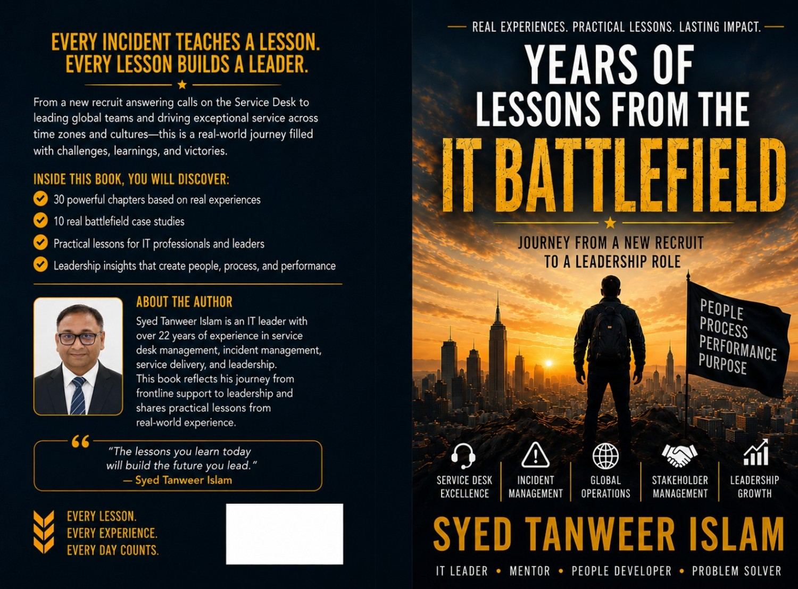

Books • Leadership • Stories • Technology. Founded by Syed Tanweer Islam, Blue Quill Studio brings together emotional fiction and real-world leadership lessons.
Explore BooksMeet the Author
Two books. Two journeys. One purpose: to connect, inspire, and leave lasting lessons.
A heartfelt story of love, silence, sacrifice, family, memory, and destiny.
Buy on AmazonReal-world lessons for service desk engineers, team leads, duty managers, and aspiring IT leaders.
Buy on AmazonSyed Tanweer Islam — author, storyteller, and IT leader.
Syed Tanweer Islam is an Indian author and IT Delivery Manager based in Bangalore, with over 22 years of experience in the IT industry.
His writing combines emotional storytelling with practical professional lessons, reflecting both the depth of human relationships and the reality of service leadership.
Every experience teaches a lesson. Every lesson builds a leader.
Read More